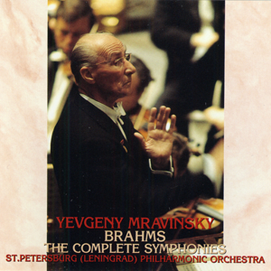

ブラームス: 交響曲第3番（ピアノ四重奏版）
ブラームスの交響曲の中でも3番は好きな方だし、その室内楽編曲ということで期待して聴いたが、期待に違わない内容だった。有名なピアノ四重奏曲第1番と組み合わせ、「シェーンベルク・エフェクト」というアルバムサブタイトルが付いている。ライナーノートが入手できないので推測だが、ピアノ四重奏曲第1番をシェーンベルクが管弦楽に編曲していること、およびこの交響曲の新しい編曲がその現代版逆写しになっていることを示唆しているのだろうか。間接的にシェーンベルクを想起しないわけにいかない構成になっているのは確かだ。ピアノ四重奏曲第1番のシェーンベルク編曲は、確か1980年頃にFM放送されたのをエアチェックし（なぜか凄く力を入れて紹介されていたように記憶する）、当時はとても気に入って繰り返し聴いたのだが、やがて何か他の曲で上書きするとともに遠ざかってしまっていた。こうして改めて原曲で聴くと、少し味が濃すぎる曲ではあるのだが、演奏の方はスポーティーで爽快なのでちょうどよい感じだ。このノトス四重奏団は同曲を持って来日公演もしているとのこと。一方交響曲のアレンジは、ピアノ版によくあるような、いかにも編曲と聞こえる書法をなるべく避け、最初からピアノ四重奏であったかのような自然な仕上がりを狙っているようだ。違和感が少しだけあったのは第1楽章のコーダ前の最後の盛り上がり部分くらいで、ほぼ何の不満もない。2楽章冒頭で主題が子守歌のように聞こえてくるのも発見だった。4楽章で見せる溜めも良いセンスで効果的に決まっている。
Brahms: Symphony No. 3 in F Major, Op. 90
(Arr. for Piano Quartet by Andreas N. Tarkmann)
Notos Quartett
(2020)
交響曲第3番の魅力に気づいたのは、ムラヴィンスキーによるライブ録音がきっかけだった。彼の3番の録音がやっと発掘されて全集が完成したという触れ込みでキングから30年ほど前に発売された国内盤2枚組CDを、4番目当てで買ったものだ（当時4番のCDを集めていた）。それまでは3番というのは3楽章が突出して有名な、全体としては渋い曲としか思っていなかったわけだが、ムラヴィンスキーの両端楽章、音は割れ気味とはいえ、切り立った崖を俯瞰するような造形と推移が素晴らしかった。それ以来新しい3番の録音を聴くときは、4楽章をまず聞いて好みかどうかをチェックするようにさえなってしまっていた。

ところが、同じ演奏の配信されている音源（下記）を聴いてみたら、音質が改善され、バランスが異なって聞こえる。CDで最初聴いた程のエネルギーは感じにくく、金管の生な突出が気になる（記載された収録日付が異なるのだが演奏は同一と思う）。それほど古い録音でもないが、やはり割れた音の録音を元に、実演も知らずに判断するのはよくなかった。とはいえその後もこれ以上に気に入るような演奏には巡り合えていないし、3番の魅力を教えてくれたことに変わりはないので結果オーライなのだが。
Brahms: Symphony No. 3 in F Major, Op. 90
Evgeny Mravinsky (cond.),
Leningrad Philharmonic Orch.
(1973)
(Jan. 21, 2023)